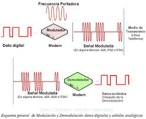
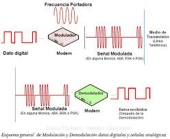

Introducción
La modulación es un proceso fundamental en las telecomunicaciones que permite adaptar una señal de información para que pueda transmitirse eficientemente a través de distintos medios de transmisión. Consiste en variar uno o más parámetros de una señal portadora, como la amplitud, la frecuencia o la fase, en función de la señal de información. De acuerdo con Simon Haykin y John G. Proakis, la modulación surge como una solución técnica para mejorar el alcance de la transmisión, reducir la interferencia y permitir el uso eficiente del espectro electromagnético. Sin la modulación, la transmisión directa de señales sería limitada en distancia y vulnerable al ruido.
Desarrollo
El uso de la modulación permite multiplexar múltiples señales, mejorar la calidad de la transmisión y adaptar la señal a las características del canal. Bernard Sklar señala que la modulación es indispensable tanto en sistemas analógicos como digitales, ya que facilita la transmisión en medios guiados y no guiados. Además, William Stallings destaca que la modulación permite la compatibilidad entre dispositivos y sistemas de comunicación modernos, desde la radio tradicional hasta las redes móviles y satelitales. A lo largo del tiempo, las técnicas de modulación han evolucionado para ofrecer mayor eficiencia espectral y resistencia al ruido.
 



Conclusión
En conclusión, la modulación es un elemento clave en el diseño y funcionamiento de los sistemas de comunicación. Gracias a los avances teóricos y prácticos descritos por autores como Haykin, Proakis y Sklar, se han desarrollado múltiples técnicas que permiten transmitir información de forma confiable y eficiente en distintos entornos.